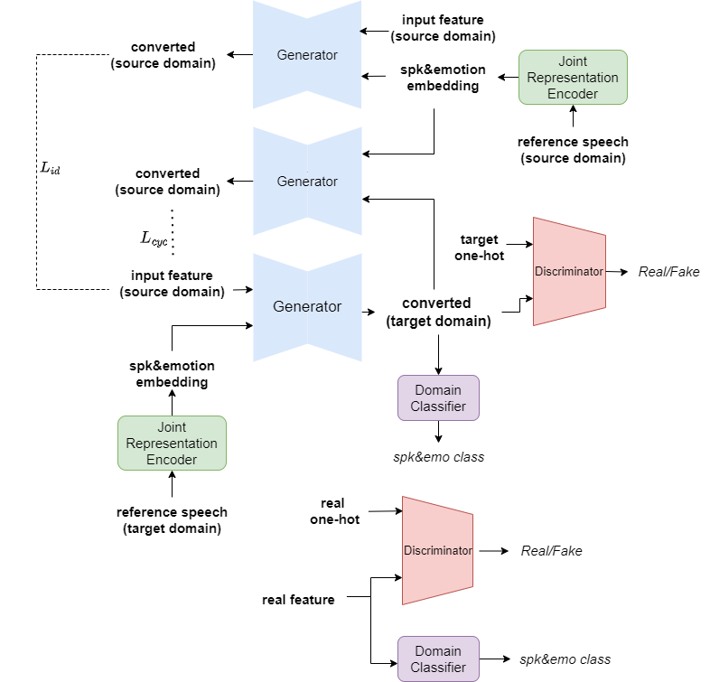

----------------------------> Model Architecture <-----------------------


-----------------------------> Speech Samples <---------------------------
Experimental Setup:
The samples are from four speakers ( two male and two female) with three emotions (neutral, happy, and sad).
Methods:
- Speaker identity conversion baseline: JES-StarGAN [1]
- Emotional voice conversion baseline: StarGAN-EVC [2]
- Proposed Method: StarGAN-UVC, a unified framework for both speaker idendity and emotional voice conversion
Speaker Identity Conversion
| Source | Target | JES-StarGAN | StarGAN-UVC(proposed) | Neutral |
|---|---|---|---|---|
Happy |
||||
Sad |
||||
| Source | Target | StarGAN-EVC | StarGAN-UVC(proposed) | Neutral-to-Happy |
|---|---|---|---|---|
Neutral-to-Sad |
||||
[2] Rizos, Georgios et al. “Stargan for Emotional Speech Conversion: Validated by Data Augmentation of End-To-End Emotion Recognition.” ICASSP 2020 - 2020 IEEE International Conference on Acoustics, Speech and Signal Processing (ICASSP) (2020): 3502-3506.